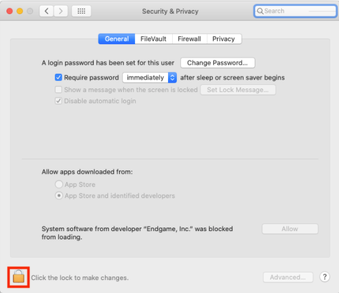
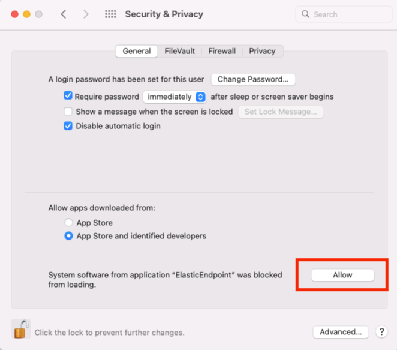
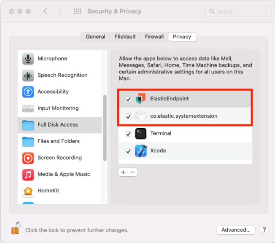

Enable access for macOS Monterey
editTo properly install and configure Elastic Defend manually without a Mobile Device Management (MDM) profile, there are additional permissions that must be enabled on the host before Elastic Endpoint—the installed component that performs Elastic Defend’s threat monitoring and prevention—is fully functional:
The following permissions that need to be enabled are required after you configure and install the Elastic Defend integration, which includes enrolling the Elastic Agent.
Approve the system extension for Elastic Endpoint
editFor macOS Monterey (12.x), Elastic Endpoint will attempt to load a system extension during installation. This system extension must be loaded in order to provide insight into system events such as process events, file system events, and network events.
The following message appears during installation:
- Click Open Security Preferences.
-
In the lower-left corner of the Security & Privacy pane, click the Lock button, then enter your credentials to authenticate.
 -
Click Allow to allow the Elastic Endpoint system extension to load.

Approve network content filtering for Elastic Endpoint
editAfter successfully loading the Elastic Endpoint system extension, an additional message appears, asking to allow Elastic Endpoint to filter network content.
Click Allow to enable content filtering for the Elastic Endpoint system extension. Without this approval, Elastic Endpoint cannot receive network events and, therefore, cannot enable network-related features such as host isolation.
Enable Full Disk Access for Elastic Endpoint
editElastic Endpoint requires Full Disk Access to subscribe to system events using the Elastic Defend framework and to protect your network from malware and other cybersecurity threats. To enable Full Disk Access on endpoints running macOS Catalina (10.15) and later, you must manually approve Elastic Endpoint.
The following instructions apply only to Elastic Endpoint version 8.0.0 and later. Versions 7.17.0 and earlier are not supported. To see Full Disk Access requirements for the Endgame sensor, refer to Endgame’s documentation.
- Open the System Preferences application.
-
Select Security and Privacy.

- On the Security and Privacy pane, select the Privacy tab.
-
From the left pane, select Full Disk Access.

- In the lower-left corner of the pane, click the Lock button, then enter your credentials to authenticate.
-
In the Privacy tab, confirm that
ElasticEndpointANDco.elastic.systemextensionare selected to properly enable Full Disk Access.